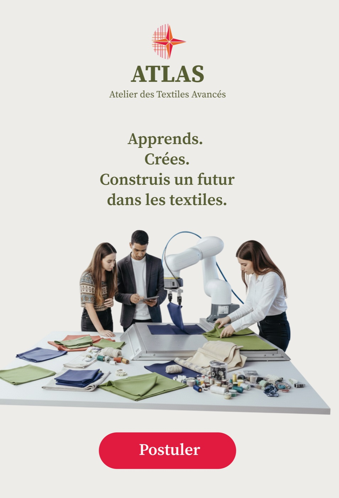
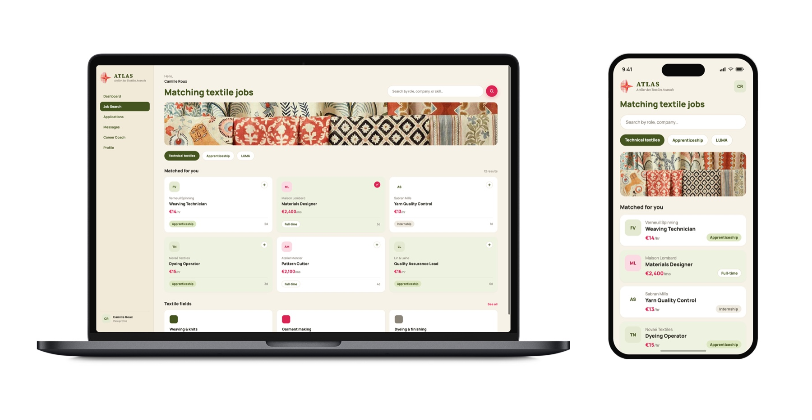
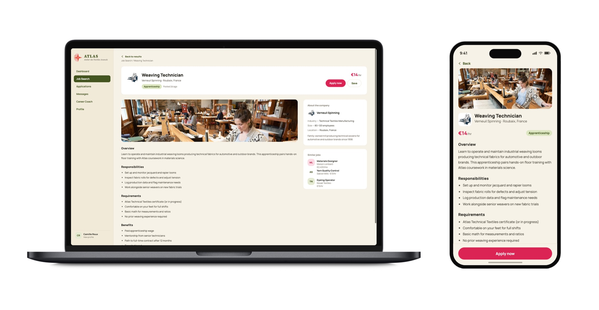

ATLAS
UI Design, Prototyping
LUMA Foundation
2026
Student Fellowship
Atlas is a tuition-free winter school designed to address the limited career opportunities available to low-income youth without higher education in Southern France, providing training for stable careers in the textile industry alongside guaranteed job placements. Building on LUMA’s ongoing research into fabric and the region’s rich textile heritage, I designed a website that connected the program’s digital identity to the local craft tradition. The color palette was derived directly from fabrics developed by LUMA researchers, that reflected colors already associated with craft and familiarity in the region. This served as a natural extension of the textile industry while creating a visual language that felt accessible and culturally fitted to its target audience.
Challenge
In Arles and the surrounding Provence-Alpes-Côte-d'Azur region, low-income youth face a lack of stable career paths. Eighty-one percent of the local population holds a working contract shorter than six months, and 32% of the local workforce has only a vocational CAP or BEP certificate, without further education. At the same time, the textile industry, responsible for an estimated 20% of global clean water pollution, badly needs a more sustainable generation of talent, and the region itself already accounts for 10% of France's textile enterprises. LUMA Foundation wanted a program that could address both problems at once, without asking students to pay for the opportunity.
Approach
We designed ATLAS, Atelier des Textiles Avancés, around a simple question: what if the young people of Arles could revolutionize the textile sector by connecting it to fashion, architecture, construction, and the region's own ecosystem, the Camargue? Rather than a traditional trade school, ATLAS needed to read as a platform open to any young person regardless of background, going beyond conventional textile training to include robotics, AI, and new applications of textile across industries. For the digital identity, I worked directly from LUMA's own bio-regional material research rather than a standard brand palette, pulling colors from fabrics its researchers had already developed and testing which pairings still read as textile-rooted once translated onto a screen. The goal was a palette that felt curated from the region's own craft language, familiar to the people ATLAS was built for, rather than picked for a generic tech-platform look.
Solution
ATLAS matches young talent in training with industrial partners, structured around a tuition-free, six-month Winter School Program each November through March, a physical hub in Arles for conferences, workshops, and startup incubation, and a training space inside the LUMA campus with access to advanced bio-textile machines. That same curated, fabric-derived color language carries through the website's layout and imagery, so the digital platform reads as an extension of the atelier itself rather than a separate marketing site bolted onto it. Revenue is designed to keep tuition free by shifting cost onto outcomes, placement fees and small equity stakes from industry partners and program graduates, alongside grants, corporate sponsorships, and rental of the physical hub during the off-season summer months.

Outcome
The result is a self-sustaining model that doesn't ask its own students, many already navigating unstable seasonal work, to pay for their own way out of it, while still giving LUMA and its regional partners, from France Travail to ENSAT, a direct pipeline into a newly skilled, bio-regional textile workforce.
